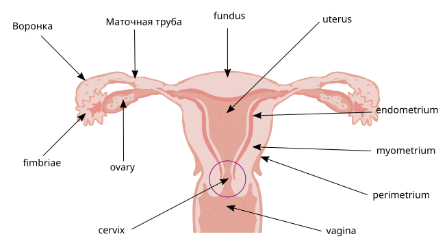

Анатомия женских половых органов
Классификация женских половых органов
Анатомически репродуктивную систему делят на наружные и внутренние органы. Топографически и эмбриологически влагалище принадлежит к внутреннему отделу, а естественной границей между преддверием и его собственной полостью служит девственная плева (hymen)[Айламазян, с. 11].

Уровни строения половой системы:[Савельева, с. 74]
- Наружные половые органы (расположены кнаружи от девственной плевы за пределами костного таза): лобок, большие и малые половые губы, клитор, преддверие влагалища, бартолиновы железы.
- Внутренние половые органы (залегают глубже девственной плевы в полости малого таза): влагалище, матка, маточные трубы, яичники.
Топографическая граница определяет тактику вмешательств и характер распространения патологий. Перед манипуляциями ткани последовательно обрабатывают 5% настойкой йода или спиртом (при пункции через своды — 2% раствором йода). Инфекции могут одновременно поражать оба уровня (специфические везикулы 2–3 мм образуются на коже вульвы, слизистой влагалища и шейки матки).
Наружные половые органы: строение и топография
Структуры вульвы требуют антисептики: перед манипуляциями на гинекологическом кресле наружные органы и влагалище обрабатывают 5% раствором йода или спиртом.[Савельева, с. 95]
Большие половые губы образуют латеральную границу вульвы. Они содержат подкожную жировую клетчатку, венозные сплетения, сальные и потовые железы. Наружная поверхность покрыта волосами, внутренняя — безволосая. Спереди губы сходятся в переднюю спайку под лобком, сзади — в заднюю спайку над промежностью.
Малые половые губы — тонкие складки медиальнее больших, без волос и жира, богаты эластическими волокнами и сальными железами. Кзади образуют поперечную уздечку, а спереди расщепляются на ножки (наружные формируют крайнюю плоть клитора, внутренние — его уздечку).
Клитор — эректильный орган, гомолог пениса из двух кавернозных тел (ножки прикреплены к надкостнице лобковых и седалищных костей, тело, головка). При стимуляции венозные каверны депонируют кровь под артериальным давлением.
Преддверие влагалища ограничено головкой клитора спереди, ямкой преддверия сзади, девственной плевой снизу. Наружное отверстие мочеиспускательного канала открывается по средней линии между головкой клитора и входом во влагалище.[Савельева, с. 158]
Бартолиновы железы — парные трубчато-альвеолярные структуры размером с горошину в задней трети преддверия, в толще больших губ. Выделяют щелочной слизистый секрет. Их выводные протоки открываются в борозду между девственной плевой и малой половой губой.
Эмбриогенез внутренних половых органов
Формирование женских репродуктивных путей является активно регулируемым процессом с ведущей ролью мюллеровых каналов (парных протоков целомического происхождения).
Сроки гестации:
- 5–6-я недели: инвагинация целомического эпителия латеральнее мезонефроса образует мюллеровы каналы.
- 8–10-я недели: вольфовы протоки регрессируют при отсутствии андрогенов и антимюллерова фактора; мюллеровы каналы удлиняются в малый таз.
- 10–14-я недели: краниальные отделы каналов образуют маточные трубы с фимбриями.
- 12–18-я недели: каудальные участки сливаются в единый маточно-влагалищный проток (тело и шейка матки, своды влагалища).
- 17–20-я недели: первичная гонада трансформируется в яичник.
Полная резорбция внутриматочной перегородки завершается к 18-й неделе. Остановка слияния каналов на 12-й неделе приводит к двурогой матке или внутриматочной перегородке.
Примордиальные терминальные клетки вселяются в гонаду. Соматические гранулезные клетки (аналог клеток Сертоли) окружают ооциты в профазе мейоза, формируя пул примордиальных фолликулов плода.[Савельева, с. 59]
Влагалище и цервикальный канал: строение и эпителий
Влагалище — фиброзно-мышечная трубка. Передняя стенка прилежит ко дну мочевого пузыря и уретре, задняя — к брюшине прямокишечно-маточного углубления (в верхней трети) и прямой кишке. Вверху стенки образуют своды (передний, два боковых, задний — для пункции брюшной полости). Осмотр стенок и влагалищной части шейки матки идет при помощи зеркал.

Влагалищная часть шейки матки покрыта многослойным плоским неороговевающим эпителием, накапливающим гликоген.[Заболевания]
Цервикальный канал — веретенообразный просвет длиной до 4 см с сужениями у наружного и внутреннего зевов.[лекция] Эндоцервикс выстлан однорядным цилиндрическим эпителием, железы которого образуют слизистую пробку.
Зона трансформации — область стыка и метаплазии эпителиев. В постменопаузе из-за падения эстрогенов она уходит глубоко в цервикальный канал, делая стандартный соскоб с наружного зева неинформативным.
Форма шейки матки и её изменения при влагалищном исследовании
При влагалищном исследовании пальцы достигают шейки на уровне интерспинальной линии малого таза.[Айламазян, с. 42]

У нерожавших шейка коническая с точечным наружным зевом. У рожавших цилиндрическая форма с поперечным щелевидным зевом является нормой после неосложненных родов.
Глубокие разрывы вызывают эктропион — посттравматический выворот слизистой цервикального канала с рубцовым дефектом стромы и раскрытием канала (требует кольпоскопии).[Айламазян, с. 62] При эктопии цилиндрический эпителий смещен на влагалищную часть без анатомических дефектов стромы.
Строение матки: слои стенки и отделы
Матка — полый грушевидный орган. Отделы: дно (выше места впадения труб), тело (коническое), перешеек (1 см), шейка (надвлагалищная и влагалищная части). Толщина стенки — 1,5–2 см, просвет имеет треугольную щелевидную форму.
Слои стенки:
- Эндометрий: функциональный слой (поверхностный, со спиральными артериями, отторгается при менструации) и базальный (прилежит к миометрию, сохраняет железы, обеспечивает эпителизацию).
- Миометрий: подслизистый (косо-продольный), сосудистый (циркулярно-перекрестный, охватывает маточные артерии для гемостаза) и подсерозный (продольный).
- Периметрий: висцеральная брюшина (плотно сращена с дном и телом).[Савельева, с. 431]
Отсутствие брюшины на передней поверхности шейки (покрыта только околоматочной клетчаткой) приводит к беспрепятственному переходу воспаления и опухолей на параметральное, паравезикальное пространства и мочевой пузырь.[Савельева, с. 271]
Нормальное положение матки: anteverzio и anteflexio
Исчезновение угла anteflexio при слабости тазового дна приводит к опущению и выпадению органов.
Anteverzio — наклон всей матки кпереди относительно оси таза. Anteflexio — тупой угол между телом и шейкой, открытый кпереди (шейка обращена книзу и кзади, тело — вперед и кверху).[Савельева, с. 16]
Топография: спереди от матки залегает мочевой пузырь, а уретра прилежит к передней стенке влагалища.[Савельева, с. 16] Сзади располагается прямая кишка, а в проекции заднего свода брюшина образует дно прямокишечно-маточного углубления.[Савельева, с. 16]
Двойной наклон кпереди гарантирует, что внутрибрюшное давление прижимает матку к мочевому пузырю и лобковым костям, а не выталкивает наружу.
Связочный аппарат матки: подвешивающий и фиксирующий
Связочный аппарат объединяет относительную подвижность тела матки со стабильным удержанием ее шейки.[Савельева, с. 74]
Подвешивающий аппарат матки обеспечивает срединное положение дна матки и ее физиологический наклон кпереди:[Савельева, с. 16]
- Круглые маточные связки (lig. teres uteri): от углов матки через паховый канал к лобковому симфизу и большим половым губам.[Айламазян, с. 14]
- Собственные связки яичников (lig. ovarii proprium): отходят кзади от маточных труб и соединяют маточный полюс яичника с ребром матки.[Айламазян, с. 14]
- Широкие маточные связки (lig. latum uteri): дупликатуры брюшины от боковых краев матки к стенкам таза. Их латеральный верхний край переходит в подвешивающую связку яичника (lig. suspensorium ovarii) с яичниковыми сосудами.
Между листками широкой связки залегает параметрий — околоматочная жировая клетчатка вокруг сосудисто-нервных сплетений и нижнего сегмента матки. Ограничен стенками матки и надвлагалищной шейки, пристеночной фасцией таза и верхней фасцией диафрагмы таза.[Айламазян, с. 225] Предшеечная клетчатка ограничена сверху пузырно-маточной складкой брюшины, снизу — пузырно-маточной связкой, сзади — шейкой матки.[Айламазян, с. 225]
Фиксирующий аппарат матки удерживает шейку в центральной части малого таза. Включает маточно-пузырные связки и крестцово-маточные связки (отходят от задней поверхности шейки, охватывают прямую кишку и вплетаются в надкостницу крестца, препятствуя смещению кпереди).[Савельева, с. 16]
Хирургическая ножка кисты яичника — комплекс сосудов и связок, подлежащих клеммированию и пересечению. Включает: подвешивающую связку яичника, яичниковые артерию и вену, собственную связку яичника, маточную трубу, участок широкой связки и яичниковую ветвь маточной артерии.[Айламазян, с. 162]
При мобилизации придатков матки первоочередной изоляции требует подвешивающая связка яичника: в ее основании рядом с сосудистыми пучками пролегает мочеточник, что создает риск его повреждения или перевязки.[Айламазян, с. 353]
Пространство Дугласа и подбиотопы репродуктивной системы
Париетальная брюшина при переходе с прямой кишки на заднюю поверхность матки и влагалища образует прямокишечно-маточное углубление — пространство Дугласа (самая глубокая и низкая точка брюшинной полости). От половых путей оно отделено задним сводом влагалища (слизистая оболочка, фасциальная пластинка и брюшина).
Подбиотопы репродуктивной системы — обособленные зоны полового тракта, различающиеся эпителием, рН и микробиотой. Снизу вверх сменяются 5 зон: влагалище, цервикальный канал, полость матки (эндометрий), маточные трубы и пространство Дугласа.[лекция, с. 56] Полость брюшины у женщин открыто сообщается с внешней средой через половые пути.
Из-за гравитации патологический выпот стекает в прямокишечно-маточное углубление, поэтому проводится пункция брюшной полости через задний свод влагалища.[Савельева, с. 89] Процедура безопасна, так как сзади брюшина спускается ниже шейки на влагалище, а спереди переходит на мочевой пузырь выше (на уровне перешейка матки). Иглу направляют параллельно задней поверхности шейки. Аспирация несворачивающейся темной крови подтверждает прервавшуюся трубную беременность, гноя — пельвиоперитонит.[Савельева, с. 89]
Кровоснабжение матки и лимфоотток половых органов
Сосудистое русло матки имеет развитую сеть коллатералей. Главный источник — маточная артерия (ветвь a. iliaca interna), подходящая к органу на уровне внутренного зева.[Айламазян, с. 17] Она отдает ветви, анастомозирующие с артериями круглых связок и яичниковыми артериями.[Айламазян, с. 17]

Венозное сплетение влагалища отводит кровь в систему внутренней подвздошной вены (v. iliaca interna) и анастомозирует со сплетениями соседних органов, обусловливая быструю диссеминацию тромботических и септических процессов.[Айламазян, с. 19]
Пути эвакуации лимфы:
- Нижняя треть влагалища, наружные гениталии и дно матки (по круглым связкам) -> паховые лимфатические узлы.[Айламазян, с. 21]
- Шейка, нижний отдел тела матки, верхние 2/3 влагалища -> наружные подвздошные узлы.[Айламазян, с. 21]
- Верхние отделы тела матки, трубы и яичники -> парааортальные и паракавальные узлы.[Айламазян, с. 22]
| Орган или анатомическая зона | Источники артериального кровоснабжения | Группы регионарных лимфатических узлов |
|---|---|---|
| Дно и верхний отдел тела матки, маточные трубы, яичники | Маточная артерия (из a. iliaca interna), яичниковая артерия, артерия круглой связки матки | Парааортальные узлы, паракавальные узлы; от дна матки часть лимфы — в паховые лимфатические узлы |
| Нижний отдел тела матки, шейка матки, верхние 2/3 влагалища | Маточная артерия и её нисходящие шеечно-влагалищные ветви | Наружные подвздошные узлы |
| Нижняя треть влагалища и наружные половые органы | Ветви внутренней подвздошной артерии и сосудистые сети промежности | Паховые лимфатические узлы |
Какие сосудистые анастомозы обеспечивают сохранение жизнеспособности миометрия при хирургической перевязке маточных артерий?
Иннервация внутренних половых органов
Иннервация включает симпатические, парасимпатические и висцеросенсорные пути, которые регулируют моторику, тонус и секрецию.[лекция, с. 12] Вегетативная нервная система лишь модулирует собственную пейсмекерную активность миометрия.
Яичниковое сплетение (plexus ovaricus) спускается от аортального и почечного сплетений к яичникам и дистальным отделам труб. Иннервация матки и влагалища идет из нижнего подчревного сплетения (маточно-влагалищного сплетения Франкенгейзера).[лекция]
Симпатические волокна (сегменты T10–L2) проходят верхнее и нижнее подчревные сплетения: активация альфа-1-адренорецепторов вызывает сужение сосудов и спастическое сокращение циркулярного миометрия, бета-2-адренорецепторов — расслабление матки. Парасимпатические волокна (S2–S4) в составе тазовых внутренностных нервов (nn. splanchnici pelvici) вызывают вазодилатацию, расслабление шейки и стимуляцию шеечных желез.
При дилатации шейки матки чувствительные афферентные пути замыкаются на уровне крестцовых сегментов S2–S4 (в составе парасимпатических нервов).[Айламазян, с. 42] От органов выше тазовой болевой линии (дно, тело матки, трубы, яичники) болевой импульс идет к сегментам T10–L2 (вдоль симпатических сплетений).
Транспортная функция маточной трубы
Маточная труба состоит из четырех отделов:
- Интерстициальный отдел — проходит в стенке матки, имеет наименьший просвет.
- Истмический отдел — короткий участок с толстой мышечной стенкой.
- Ампулярный отдел — самый длинный и широкий, место оплодотворения.
- Инфундибулярный отдел — воронка с фимбриями, направляющими яйцеклетку.
Транспорт содержимого обеспечивается двумя синхронными механизмами: перистальтикой трубы (сокращения гладких мышц к матке) и биением ресничек мерцательного эпителия трубы.
Зигота из ампулярного отдела попадает в истмический, где задерживается перистальтикой на 2–3 суток до стадии морулы. Затем через интерстициальный отдел она поступает в полость матки на 4–5-й день после оплодотворения.
Проверьте себя: назовите два механизма транспортной функции маточной трубы и объясните, почему нарушение одного из них уже достаточно для формирования трубного фактора бесплодия.
Аномалии развития и дисгенезия гонад
Изолированные врожденные пороки оттока менструальной крови протекают бессимптомно в детстве и манифестируют только в пубертатном периоде с началом секреции половых стероидов.[Савельева, с. 155]
Атрезия гимена (сращение девственной плевы) приводит к скоплению крови с развитием гематокольпоса и гематометры.[Савельева, с. 28] Аплазия влагалища представляет собой полное отсутствие влагалища при сохранных наружных гениталиях, а стеноз шейки матки нарушает проходимость цервикального канала.[Айламазян, с. 62] Для исключения крови в брюшной полости выполняют диагностическую пункцию через задний свод (после обработки спиртом и 2% раствором йода).[Савельева, с. 89]
При аномалиях оттока вторичные половые признаки развиваются своевременно. Напротив, дисгенезия гонад (хромосомная патология) характеризуется недостатком эстрогенов: вместо яичников образуется streak-гонада (бессосудистый фиброзный тяж без фолликулов), развиваются гипоплазия мюллеровых протоков, первичная аменорея и отсутствие вторичных половых признаков.
| Вид аномалии | Поражённая структура | Срок манифестации |
|---|---|---|
| Атрезия гимена | Девственная плева | Пубертатный период (менархе) |
| Аплазия влагалища | Стенки влагалища | Пубертатный период |
| Стеноз шейки | Цервикальный канал | Пубертатный период |
| Дисгенезия гонад | Яичники (streak-гонады) | Пубертатный период (первичная аменорея) |
Генитальный пролапс: анатомические основы и классификация
Основное сопротивление внутрибрюшному давлению оказывает мышечно-фасциальный пласт промежности. Генитальный пролапс — это грыжа тазового дна, развивающаяся через дефект влагалищного входа с вовлечением стенок влагалища, шейки и тела матки, мочевого пузыря и прямой кишки.[лекция, с. 15]
Степени пролапса по смещению относительно половой щели:
- I степень — шейка матки опускается не далее половины длины влагалища;
- II степень — шейка матки и (или) стенки влагалища достигают входа во влагалище;
- III степень — шейка матки со стенками влагалища выходят наружу, но тело матки выше влагалищного входа;
- IV степень — полное выпадение матки и вывернутых стенок влагалища.
При пролапсе или эктропионе (вывороте слизистой оболочки канала шейки матки) однослойный цилиндрический эпителий выходит во влагалищную среду или наружу, подвергаясь трению, высыханию, контакту с кислой средой или патогенами.[лекция] В ответ активируются резервные клетки (малодифференцированные субцилиндрические камбиальные элементы), запускающие плоскоклеточную метаплазию — замещение цилиндрического эпителия многослойным плоским. Процесс защищает строму от изъязвления, но при хроническом воспалении требует цитологического контроля для исключения дисплазии.
Источники
- Гинекология в таблицах
- Гинекология. Айламазян 2013
- Гинекология. Савельева, Бреусенко 2018 (4-е изд)
- Национальное руководство. Савельева, Кулаков, Манухин 2009